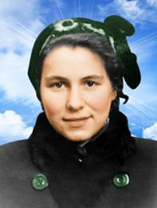
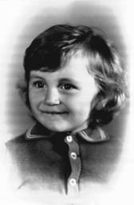
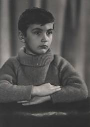
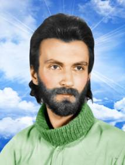
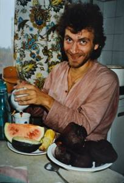
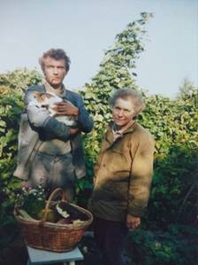

Страницы авторов "Тёмного леса"
Литературный Кисловодск и окрестности
Пишите нам! temnyjles@narod.ru
Родители. Моя жена, Никифорова Делли Александровна, родилась 7 января (День Рождества Иисуса Христа) 1931 года на полгода и 3 дня раньше меня. Её отец умер в 1943, а его сестра Маша, Делина тётка, прошла медсестрой всю войну. После войны работала в детском санатории в 50 км от Ленинграда. Кроме чисто медицинских дел в её обязанности входило поддержание гигиены и режима больных детей. По выходным на санаторий обрушивались толпы родителей с избыточным количеством разных лакомств и не признававших карантины. После их приезда дети страдали от переедания и других отклонений от лечебного режима. Маша вела с родителями безуспешную борьбу, переживала и ругалась "Ох уж эти ненормальные матки" (у неё детей не было). Деля слушала и проникалась тёткиной идеологией. В 1948 году она, как и я, поступила на физический факультет Ленинградского университета. Три с половиной года я её не замечал, а в середине 4-го курса "вдруг" увидел и влюбился, как "с первого взгляда". В начале 5 курса, 14 сентября 1952 года (нам было по 21 году) мы поженились и прожили 53 года до самой её смерти от третьего инсульта 5.02.2006.
|  | Деля, 1952 |
|  | Яша, полтора года, 1965 |
|  | Яша, 6 лет, 1970 |
У нас было два сына. Старший, Алик родился в С.-Петербурге 12 июля 1955 года, с его воспитанием никаких проблем не возникало, и вырос очень хороший парень: спортсмен, мастер спорта по гребле на каноэ, университетское образование - геолог-геофизик, аккуратный, работящий, всё умеет делать, за что ни возьмётся. Младший, Яша родился в Крыму, в Алуште 3 сентября 1964 года. С двух месяцев до полутора лет жил с нами в Борке Ярославской области в благоустроенном доме Папанинского Академгородка, окруженном парком (бывшая усадьба революционера-народника, отсидевшего 30 лет при царе в каземате Петропавловской крепости, академика Н.А.Морозова). Яша был замечательным малышом: здоровым, подвижным, жизнерадостным. Я заснял кинофильм, когда ему было 4-5 месяцев. Стоять на ногах он ещё не мог, но стоя на коленках, любил энергично раскачиваться взад-вперёд с восторгом сияющих глаз. Он был явно счастливым ребенком что-то до полутора-двух лет (фото вверху), а взрослым пережил много неприятностей и, по-видимому, был пессимистом. (И я склонен предположить, что в жизни каждого человека: принца и нищего, богатого и бедного, здоровяка и болезненного инвалида существует примерно одинаковый баланс счастливых и несчастных переживаний). Когда Яше было полтора года, мы переехали в Киев в сырую темную квартиру в индустриальном районе города и Яшу водили в детский сад. Дисциплина и обстановка в садике его травмировала, он часто болел и жизнерадостность улетучилась, он стал задумчивым и самоуглубленным (фото вверху).
|  | Яша, 22 года |
|  | Яша, 26 лет. Момент кайфа |
|  | Яша и мама Деля, 1992, на огороде в деревне |
И я, и мама Деля очень любили Яшу, но начиная с его двухлетнего возраста у нас обнаружилось несогласие в воспитании. Я хотел, чтобы мы с малых лет приучали Яшу к труду, к самообслуживанию, к поддержанию порядка. При этом он по неумению мог в чем то неумышленно и навредить (разбить посуду, испачкать одёжу...), что Делю очень травмировало, и она говорила, что ей легче всё сделать самой, чем учить его и исправлять его невольные ошибки. Наказывала за нечаянно разбитую посуду и не обращала внимания на лень, на случаи неправдивости. Бывала деспотична, например, заставляла кушать все, что готовила и считала полезным, например пшенную кашу, которую Яша терпеть не мог. Переубедить её я не мог (она Козерог), оспаривать её действия при Яше считал не правильным, и Яша рос не приученный к порядку. Старшего сына мы вроде бы и не приучали, у него стремление к порядку, аккуратности, самообслуживанию, по-видимому, врожденное. А у Яши развивалась неспособность и нежелание поддерживать порядок (как в вещах, так и в организации своей деятельности), что создавало неудобства для окружающих, особенно для живущих вместе с ним, и конфликты в сообществах, где он находился (школа, больницы, места работы, центры реабилитации, монастырь...)
Школьником и позднее Яша много читал и многое запомнил на долгие годы. На уроках в школе был невнимательным и учился кое-как, несмотря на хорошие способности. С 6 по 8 классы увлёкся, как бы это назвать, географическим фантазированием. Я сам очень люблю географию. У меня дома было много карт и атласов всех частей света и много географической литературы. Яша всё это читал, на картах и атласах вырисовывал новые страны - и он жил в этом им созданном мире. Реальную географию знал по многим аспектам лучше и подробнее учителей, но на уроках был невнимателен и перебивался с троек на четвёрки, даже по географии. Уговаривали Яшу умерить "географическое фантазирование" и больше времени уделять школьным программам. Бесполезно. Яша в школе учиться лучше не стал. Тогда после нескольких предупреждений, я собрал несколько наиболее важных для него атласов и спрятал их дома (Сейчас я сожалею об этом. (В моей жизни было подобное: в начале 10 класса моя мама отлучила меня от яхт-клуба.Я повозмущался, а потом взялся за учебу и кончил школу на отлично)). Яша не возмущался, не искал атласы, стал меньше этим заниматься и вскоре совсем забросил "географическое фантазирование". По-видимому, в это время началось его знакомство с наркотиками (как он сам впоследствии говорил с 14 лет). В 9 классе вокруг Яши образовалась такая компания друзей, что для разрядки ситуации мы решили вывезти Яшу из Киева. Выпускной 10 класс он проходил и закончил в Борке Ярославской области. Деля была с ним. В.А.Троицкая выделила им жилье и рабочее место Деле. Кончил Яша с аттестатом: половина троек, половина четверок. Поступление в институт считалось тогда обязательным, чтобы избежать службу в армии с вероятным участием в Афганской войне. В престижный ВУЗ (музыкальный, театральный, медицинский, куда Яша хотел бы поступить) не пройти. Подал документы в один из непрестижных тогда Технологический институт лёгкой промышленности, где был недобор. Числился в нём один семестр, на лекции ходил мало, экзамены сдавать не стал. При призыве в армию притворился душевно больным (а может быть не притворился, а действительно уже был им), был направлен в псих-больницу на обследование (где познакомился с наркоманами со всего Киева), признан душевно больным и получил военный билет с освобождением от строевой службы по статье 7б, что лишало его возможности управлять транспортом и выполнять ряд других работ (поскольку при поступлении на работу необходимо было предъявлять военный билет), а также возможности поступления в Институты ряда специальностей, включая медицину.
В Советском Союзе все должны были работать. Яша ни на одной работе долго не задерживался. Вот список из Трудовой книжки его должностей и организаций с указанием года и длительности работы в месяцах: лаборант Института легкой промышленности, 1981, 12 мес.; Почтальон на почтамте, 1983, 2 мес.; Рабочий в магазине "Детский мир", 1983, 2.5 мес.; Дворник в Киево-Печерском заповеднике, 1984, 7 мес.; Рабочий спецэкспедиции "Печорагеофизика", 1985, 3 мес.: январь-мартработа на севере Коми АССР на непроходимых болотах, куда можно попасть только зимой по льду. Ночуют в палатке. Обязанности рабочего состоят в растягивании проводов для электроразведочных измерений, затем их сматывании и переносе на новое место. Натаптывается 10-15 км по глубоким сугробам. Работа длится до 10 часов в день, большей частью в темноте (полярный день-сумерки в январе совсем короткий) на 40-градусном морозе. И всё это Яша выдержал и заработал хорошие деньги. Расклейщик афиш Киевгорсправки, 1985, 1 мес.; Грузчик ресторана "Столичный", 1986, 2 мес.; Артист Хабаровской краевой филармонии, 1986, 2мес.; Сезонный рабочий экспедиции Института геофизики, 1986, 4 мес.; Натурщик Киевского художественного института, 1987, 6 мес.; Ст. техник сезонных полевых работ НПО "Рудгеофизика", 1987, 3.5 мес., 1988, 3.5 мес. - работы в горах Кавказа. Разнорабочий кооператива "Универсал", 1989, 13 мес.; Агент по снабжению НПФ "КОРТ", 1990, 6 мес. Далее 20 лет записей не было, иногда подрабатывал натурщиком или артистом в массовых киносъёмках. Кладовщик ТОВ "Увокорп", 2011-2017.
Спортом и зарядкой Яша никогда заниматься не хотел, но был ловким, сильным и смелым. Ему было лет 8, когда я взял его в экспедицию в горы Кавказа. Работаем выше ледника в долине, рядом полноводная горная река мчит ледяную воду между крупными валунами. Он бесстрашно прыгает по валунам над водою. Я со страхом смотрю на него: ведь если подскользнётся и упадет в воду, то за валун навряд ли сможет ухватиться и вылезти, и подбежать к нему на помощь навряд ли я успею - поток быстрее, чем моё перемещение по валунам на берегу.
Когда Яше было 12 лет, я при активном участии старшего сына сделал виндсерфинг, и мы начали учиться ходить на нём, управляя парусом. Мне долго не удавалось держать равновесие на узкой доске. Более ста раз я падал в воду, пока научился. А Яша, как только осилил подъём из воды тяжёлой мачты с парусом, за несколько дней освоил балансировку и стал более опытным (нет, опыта у меня было больше) умелым и быстрым серфингистом, чем я. Но, в противоположность мне, он не стал энтузиастом ни этого, ни другого вида спорта.
В старших классах Яша участвовал в постановках драмкружка. После школы три года посещал Литературное Объединение, год занимался в студии пантомимы. Любил с компанией друзей (там были поэты, художники, музыканты...) вылазки на природу, где играли в чехарду, дурачились, читали стихи, пели. У Яши был хороший голос. На гитаре и пианино он на слух подбирал нужные мелодии (нигде не учился и нот не знал) или сочинял свои импровизации. Я очень любил слушать его исполнение. К сожалению, никаких записей не сохранилось.
Яша был компанейским парнем, и его друзья часто приходили к нам домой. Вначале это были школьные товарищи. Потом контингент стал смещаться в сторону наркоманов, и через несколько лет в их составе был значительный процент из преступного мира. Дело в том, что Яшу не раз задерживали на улице с небольшим (но подсудным) количеством наркотиков и сажали на 1-2 месяца или в страшно неблагоустроенный (без кроватей, без питания) подвал районной милиции или (1 раз) в знаменитое Лукьяновское СИЗО, где и возникали эти знакомства. До осуждения Яши дело не доходило. Его направляли на психиатрическую экспертизу, признавали "невменяемым в момент совершения преступления" и направляли на лечение на 1-2 месяца в психиатрическую больницу или сразу отпускали домой под наблюдение местного нарколога и милиции. Такое наблюдение продолжалось годами. Тем не менее Яша постоянно приводил, часто с ночевкой, своих друзей, преимущественно наркоманов, включая и преступников. Иногда приходилось выгонять их, они, в основном, вели себя сдержанно из уважения к Яше. Было несколько краж электронной аппаратуры, которую я привозил Яше из-за границы. Яшу не раз арестовывали на улице за обладание наркотиками. А если бы на квартире задержали группу наркоманов и нашли наркотик, то это рассматривалось бы как наркопритон, за что полагалась очень строгая статья (кажется до 15 лет).
Естественно, мы, как могли, боролись с Яшиной наркоманией. Но у него уже была сильная наркозависимость, и прекратить её можно было только, поместив его в реабилитационный наркоцентр (РЦ) закрытого типа. Неоднократно мы помещали его в такие центры на несколько месяцев, преимущественно в Крыму (пригороды Бахчисарая, Севастополя, Симферополя), из РЦ близ Киева он обычно сбегал. Каждый раз большая проблема была уговорить его, затем найти Центр, в котором были места и соглашались взять его (у него был диагноз прогрессирующая шизофрения) и, наконец, внести немалую оплату. Яше обычно там не нравилось, и он упрашивал нас поскорее забрать его домой. Для его физического и психического здоровья там было гораздо лучше, но не было свободы и некоторых возможностей, существенных при его приобретенных от наркомании болезнях (потеря нижней челюсти и всех зубов, цирроз печени, нарушение кровоснабжения ног с угрозой гангрены).
Возвращаясь домой, он некоторое время старался воздерживаться, но его окружали старые друзья-наркоманы, которые упрашивали, а некоторые бандиты требовали помочь им в правильном приготовлении и употреблении наркотиков. Яша был одним из лучших специалистов Киева в этом деле и имел кличку "Мёртвый космонавт". Он самостоятельно изучил разделы химии, фармацевтики и медицины, связанные с получением, очисткой, дозировкой приема наркотиков, как из натурального растительного сырья, так и из различных лекарственных средств в аптеках. Последний путь был не изученным, применялся только в странах СНГ и один из популярных рецептов после достаточно длительного применения приводил к специфической форме остеопороза: кости, начиная с нижней челюсти, как бы гнили. К врачам Украины попало около тысячи таких больных, все наркоманы. Мировой медицине болезнь неизвестна. Наша челюстно-лицевая хирургия пошла по пути удаления гниющей кости вплоть до зачистки здоровой кости, но процесс продолжался и в, на первый взгляд, здоровых участках. Яша пережил три операции зачистки и прогноз врачи дать не могли, не исключалось и поражение черепа выше челюсти (к счастью, у Яши загнивание приостановилось, но он остался без нижней челюсти и это уродство могла прикрыть только хорошая борода). Врачи прописывали таким больным лекарства, общеукрепляющие средства, здоровый способ жизни и отказ от наркотиков. Последнее многие больные, включая Яшу, не выполняли. Поэтому его изоляция в РЦ была необходима и по этой причине.
Особенно ценным было его почти двухлетнее пребывание в качестве послушника в Косьмо-Дамиановском монастыре, расположенном в 16 километрах от Алушты в высокогорном лесу на территории Государственного заповедника (его письмо мне из монастыря приведено после стихов). Там находится Святой целебный источник Савлух-Су, которым он неограниченно пользовался. Там он существенно пополнил свои знания Библии и молитв, которые ежедневно с искренней верой произносил в храме. Наверное, Бог услышал его молитвы и остановил распад челюсти. В монастырь, как на Святое место, приезжали пообщаться с Богом православные Украины, России и других стран. Яшины знания богословия и философии позволяли ему на равных общаться с ними, а с некоторыми поддерживать знакомства и после монастыря, в том числе престижные и полезные, в частности, с руководителем симфонического оркестра, помогшим выбрать и настроить хорошую гитару и давшим полезные советы по музыке; с предпринимателем, принявшем Яшу, как инвалида 2 группы, на постоянную работу с минимальными обязанностями. Причем Яша не искал и не гонялся за этими благами, они сами находили его.
Однако, вернемся в его молодые годы. Мама Деля была предана семье и дому. До пенсии в 59 лет работала и вела все домашнее хозяйство. Я выполнял мужские работы и делал покупки мебели, одежды себе, ей и детям, поскольку много разъезжал и проявлял решительность в покупках, которой ей не хватало. Она не гналась за модой, не красила губы и брови - и так была хороша. Хорошо стряпала и подавала еду в нужное время. Я и Алик по её первому зову садились за стол и не доставляли ей лишних хлопот. "Самоуглублённый" Яша обычно не отрывался от своих даже мелких дел и Деле приходилось подогревать все второй, а иногда и третий раз. Это её изматывало, и она кричала на него. Когда же она видела его в наркотическом состоянии, то кричала ещё более злобно. Он же, обычно неспособный кого-либо обидеть, иногда свирепел и швырял в неё чем попало. Один раз сильно брошенной глиняной кружкой рассек ей лоб над бровью, и пришлось сшивать рану в больнице. Швырялся и в меня. И всегда потом каялся и просил прощения. Всё это можно описывать в терминах "вселившегося в него беса".
В 1990-е годы я по работе общался с сильнейшими экстрасенсами-биоэнергетиками страны, способными дистанционно за тысячи километров диагностировать и лечить людей. Я показывал Яшину фотографию, они входили в информационное поле Земли, считывали информацию о Яше: возраст, болезни, местонахождение (всё правильно) и просил вылечить Яшу от его душевной болезни. Они отвечали, что темная сущность (бес), поселившаяся в нём, очень сильна, и никто из них не брался её одолеть. Советовали обратиться к продвинутым церковным старцам, способным с божьей помощью изгонять бесов. Но для этого необходима духовная молитвенная подготовка и согласие Яши пройти весьма мучительную процедуру изгнания беса. Видимо, сам бес, манипулирующий Яшей, не позволял ему согласиться на это. Пытался я узнать у экстрасенсов, когда и как в Яшу вселилась эта сущность. Было две версии: Первая: Когда Яше было около трёх лет, во время прогулки с мамой маневрирующий невдалеке паровоз с шумом выпустил струи пара и дыма, что очень испугало Яшу и его поведение изменилось. Вторая: просто от приёма наркотиков.
Деля очень переживала неблагополучие с Яшей и часто ругала его. Вот одна из сохранившихся записок ему: "Неужели ты ничего не создашь ни руками, ни головой, ведь ты умный, способный и преступник перед обществом, ибо ничего не даешь обществу. Ублажаешь свои прихоти болтовней и химикалиями. Сжигаешь жизнь, дарованную тебе матерью, для которой то, что ты убиваешь себя, равносильно тому, что ты убиваешь меня. Замкнутый круг. На что я потратила жизнь?
Вот такой накал страстей был в нашем доме. При этом Деля добросовестно кормила Яшу и прибирала весь тот беспорядок, который он постоянно воссоздавал. А когда его арестовывали, носила большие передачи, обращалась к адвокатам, писала жалобы прокурорам на следователей, убеждала Яшу твёрдо отрицать свою вину.
О Яшиных подругах и их взаимоотношении с Яшиной мамой, что влияло на атмосферу в нашем доме и на Яшину жизнь. Яша был умный интересный собеседник, добрый отзывчивый всегда готовый помочь человек и красивый мужчина. Люди тянулись к нему, особенно женщины. Женат он был один раз и не долго. Инна Фрегер на 7 лет старше его. Помню, она приходила к нам в квартиру и, стоя в коридоре, в экстазе смотрела на Яшу снизу вверх влюблёнными глазами. Яше было 20 лет и Деля была активно против. Но Инна забеременела, и они поженились. Потом Яша уехал в давно запланированную зимнюю экспедицию на 3 месяца. Сохранились её сумбурные влюблённые письма. На 5м месяце беременность закончилась выкидышем. Дальнейших деталей не знаю. Через год она подала на развод (впоследствии говорила, что из-за Яшиной наркомании). Она осталась под Яшиной фамилией.
Следующая подруга, Оля Ткаченко (пишу только о тех, кто жил у нас в квартире) была очень приятная, её беременность так же закончилась выкидышем. Деля её попросила уйти, поскольку она недостаточно активно помогала бороться с наркоманами, а может-быть и сама принимала. И она исчезла. Больше от Яши никто не забеременел и детей он не имел.
Лена, старше Яши лет на 8. Моложавая, стройная, спортивная, с сильной энергетикой, работящая, все умеющая, увлекающаяся искусством. У нее был уже взрослый сын, муж умер. Возможно, после его смерти она попала в компанию наркоманов, но вскоре добровольно пошла на реабилитацию и стала активным членом волонтерской организации по борьбе с наркоманией. Бывала у нас в квартире, но особенно много на нашей даче в деревне. Дом в деревне с 40 сотками сада-огорода в живописном месте на берегу реки мы купили в 1989г. Деля вышла на пенсию и с удовольствием занималась сельским хозяйством (см. фото выше). Туда мы старались вывезти и Яшу, чтобы оторвать его от компании окружавших его наркоманов, ну и просто на природу. Он обычно ехать не хотел, кроме периодов созревания мака и конопли. Лена помогала вытащить Яшу из города и составляла ему компанию в деревне. Деля и Лена выступали против наркомании, и потому были в отличных отношениях. А Яша при них занимался наркоманией. Это был его главный приоритет и ничего они не могли сделать, - только напрасно докучали ему своими уговорами. У Лены подрастали 4 внука и далее ей пришлось жить с ними в загородном доме в Буче. Нас в Киеве изредка навещала, но к себе домой Яшу не подпускала, т.к. он "испортил бы энергетику в обители её внуков". Внуки всё время в компьютерах, помогать ни в чем не хотят. Их родители работают. На Лене и покупки, и стряпня, все мойки, стирки и уборки, сад. Возмущается, портится характер, пессимизм, перелом ноги, но еще тянет хозяйство. Рак, и умирает в начале 2019.
Сашенька. После 2000 года. Деля уже после инфаркта. Саша тоненькая, высокая, с круглым чисто русским наивным личиком и курносым носиком, беззащитная, лет на 10 младше Яши. Я чувствовал к ней отеческую нежность. Её мать умерла рано. Отец женился на другой, новые дети. Отец был богат и очень хорошо относился к Сашеньке. Не помню, работала ли она где-либо. Отец умирает. Саша имеет право на хорошую часть наследства. Но она совершенно не приспособлена (всё делал и оформлял отец), не знает, что ей полагается, куда и с чем обращаться (совет чрезмерно опекающим родителям: приучайте детей к самостоятельности). Мачеха подсовывает ей доверенность на получение Сашиной доли, обещая ей квартиру. Мачеха оформляет себе и своим детям хорошие квартиры в Киеве, а Саше за копейки покупает гостинку без мебели на 1 этаже в 40 км от Киева, где не найти работу, да и нормально жить невозможно. И вот Яша приводит её жить у нас. Не думаю, что это была любовь или увлечение. Яша часто приводил друзей киевских и иногородних, и они ночевали (чаще бодрствовали всю ночь) в его вечно захламлённой комнате. Кровать у него была односпальная и гости размещались на матрасе на полу, куда поместили и Сашеньку. Она постоянно прибирала по своей инициативе (Яше это было безразлично и мы не просили, но очень одобряли) хламёжник в Яшиной комнате, который он сразу восстанавливал, помогала Деле по хозяйству, присутствовала при приходе Яшиных гостей. Не помню, выгонял ли он её при выполнении нарко-процедур. На лето Деля с Яшей собирались в деревню. Саша никогда не выезжала из города и переживала, как-то там будет. И всё лето с восторгом провела с нами в деревне. Осенью вернулась в Яшин хламёжник, а зимой стала болеть непонятно чем. Несколько дней держится температура 39-40 градусов, обычные средства не помогают. Вызываем врача, он говорит, что необходимо обследование, но его надо проходить по месту её прописки. Она поехала и пропала, не позвонила. Через несколько дней удалось связаться с её мачехой. Она сказала, что Саша умерла. Очень укоряю себя - надо было не идти на работу, а проследить её продвижение на обследование и не выпускать из вида.
Наташа после 2010 года, лет на 10 младше Яши. Её родители и дети в Черкасской области. Муж утонул и она на заработках в Киеве. По образованию медсестра, но работала посудомойкой в "Пузатой хате". Ночует в Яшиной комнате, после работы немного помогает нам по хозяйству. Он говорил, что отношения были чисто дружеские. Иногда она привозила в Киев своих детей, Яша с ними немного занимался и стал крестным отцом при крещении шестилетнего Вовчика.
И еще была Галка, примерно его ровесница из Винницы. Работала на керамическом заводе в Киеве и увлекалась изготовлением великолепных гончарных изделий. Многолетняя дружба с Яшей. Деля к ней относилась хорошо, потому что Галка - труженица. Пыталась создать малое гончарное производство, но не получилось. Как и Яша рано стала инвалидом 2 группы по психиатрии и получила пожизненную пенсию. После 2000 года болеет и живет с сестрой в Виннице
Яша не был влюбчивым. Наверное, инициатива чаще исходила не от него. И очень сильно не любил никого, по моим наблюдениям. Это видно и по его стихам. Но отдельные разочарования, вероятно, существовали, и их отражение можно увидеть в некоторых строчках.
Его стихи - это размышления над бытием, раздумья о своем пути, осознание неправильности своего пути и пессимистическое признание отсутствия воли идти правильным путем:
. Отдельные зарисовки пороков общества, пропитанного ложью. Отдельные всплески призывов бороться с этими пороками:
Резюме: Он делал то, что хотел, но не делал многое из того, что надо.
Яша родился, вырос и прожил жизнь в интеллигентной, обеспеченной, внешне дружной, работящей семье. Был здоровым, жизнерадостным, нормальным младенцем. В подростковом возрасте появились некоторые странности, самоуглубленность. То, что его заинтересовывало (в книгах, разговорах, в политике, философии, религии, в медицине, химии...) он понимал, надолго запоминал и мог применять на практике. В итоге был эрудитом, с которым друзья советовались по многим вопросам., То, что его не интересовало он не хотел делать или делал плохо: не хотел поддерживать порядок в комнате и на столе, соблюдать режим дня, учить уроки. В итоге конфликты в детском садике, в школе, на работе, дома с родителями. А с 14 лет появилось доминирующее хочу - наркотики. Мы, родители не сумели найти нужные подходы помощи Яше. Мы только напоминали ему о том, что он должен, причем Деля часто в бесполезно резкой форме. Таким образом, Яшу окружала некомфортная психическая обстановка дома, в школе, обществе. Он осознавал свою неадекватность, видел несовершенство людей, общества, и всё это, как умел, выражал в своих стихах.
Игорь Рокитянский
Моё обращение к стихам Яши, провалявшимся на полках более 30 лет, было стимулировано чтением "Воспоминаний" Варлама Шаламова, его обсуждением, что такое поэзия. В 1920-е годы некоторые журналы, старавшиеся работать по заказу революции, просили присылать новые необыкновенные рифмы и провозглашали: "Мастерство мы ставим на пользу советской власти, готовы рифмовать ее лозунги и газетные статьи, писать фельетоны в стихах..." Маяковский и его последователи ставили "заготовку рифм" на широкие рельсы (а как же: пусть каждый "Землю попашет, попишет стихи" Маяковский). Мой дед - Яшин прадед Яржемский Яков Ипполитович (в честь которого назвали Яшу) к концу 1920-х составил толстенную рукопись, как писать стихи, снабдив ее тысячами разнообразных рифм. Напечатать ее не удалось, но рукопись у меня сохранилась вместе с черновиком письма Сталину (возможно и не отправленному), в котором дед просил содействовать её напечатанию.
Однако Шаламов (а теперь и я) думал иначе: "Мастерство - далеко не главное в поэзии"... "Поэт должен сказать свое, не обращая внимания на форму, пытаясь донести до читателя то новое и важное, что поэт увидел в жизни" И далее: "Для настоящих стихов мастерства мало. Нужна собственная кровь, и пока эта кровь не выступила на строчках, поэта в настоящем смысле нет, а есть только версификатор. Поэзия - судьба, а не ремесло", "Научиться писать стихи нельзя" [Шаламов, Воспоминания].
Шаламов приводит цитаты из известных поэтов: "Талант - единственная новость, которая всегда нова" - Пастернак. "У поэта нет карьеры. У поэта есть судьба" - Блок. К этим цитатам мне кажется уместным присоединить великолепное стихотворение Кайсына Кулиева:
Да! Яша писал не для карьеры, а по внутренней потребности, в некоторых его строчках проступает "собственная кровь". Следовательно, можно полагать, что, несмотря на многочисленные недоработки и дефекты его стихов, Яшу можно считать истинным поэтом?
Новизна в его стихах присутствует. Значит, он был талантлив? Наверное, да. Нигде после школы не учился, но обладал широкой эрудицией по многим вопросам, импровизировал в стихах, музыке, пении, друзья обращались к нему за советами. И в жизни он ничего не совершил, как он сам писал в возрасте 22 года: "Но сгорает шелк моей жизни так быстро! Что ничем не успеть мне остаться на свете!" Почему же так получилось? Мы всю жизнь жили вместе и только я могу попытаться ответить на этот вопрос, написав рассказ-исповедь о его жизни - его биографию.
Страницы друзей "Темного леса"
Последнее изменение страницы 13 Sep 2019
{kind=link}
{kind=link}
{kind=link}
{kind=link}
{kind=link}
{kind=link}